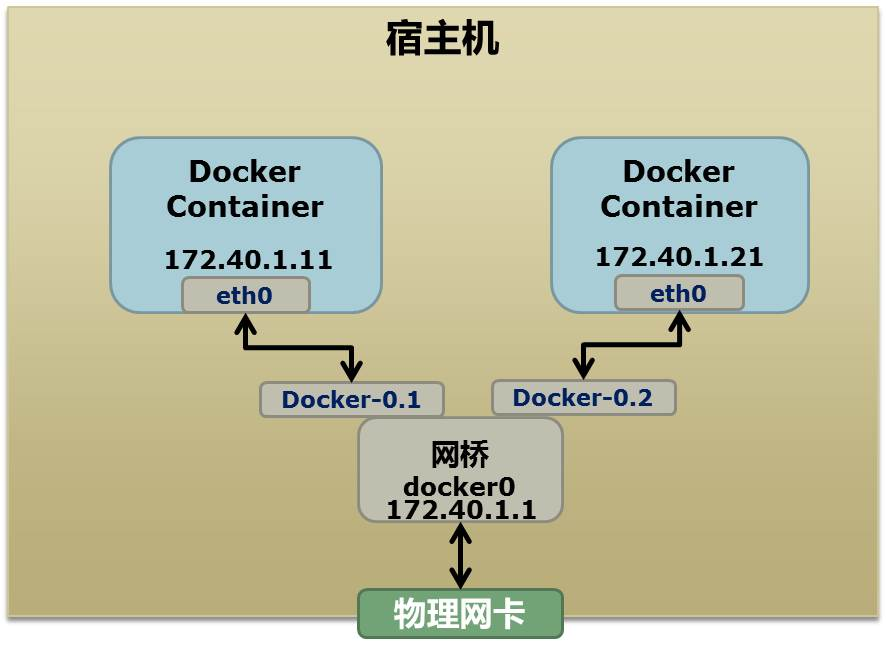

Docker 是一个开源的应用容器引擎，让开发者可以打包他们的应用以及依赖包到一个可移植的镜像中，然后发布到任何流行的 Linux或Windows 机器上，也可以实现虚拟化。容器是完全使用沙箱机制，相互之间不会有任何接口。
Docker基本概念
Docker 包括三个基本概念:
镜像（Image）：
Docker 镜像（Image），就相当于是一个 root 文件系统。 比如官方镜像 ubuntu:16.04 就包含了完整的一套 Ubuntu16.04 最小系 统的 root 文件系统。容器（Container）：
镜像（Image）和容器（Container）的关系，就像是 面向对象程序设计中的类和实例一样如下表，镜像是静态的定义，容器是镜像运行时的实体。容器可以被创建、启动、停止、删除、暂停等。Docker 使用客户端-服务器 (C/S) 架构模式，使用远程 API 来管理和创建Docker 容器。docker概念 面向对象概念 容器 对象 镜像 类 仓库（Repository）：
仓库可看着一个代码控制中心，用来保存镜像docker基本操作
1. 安裝
1
2
3
4
5#不到300M
#sudo apt-get install docker在Ubuntu16以上要加.io
sudo apt-get install docker.io
#查看docker版本
docker –v1
2
3
4
5
6
7
8
9
10
11
12
13
14
15#安裝必要的系統工具
sudo apt-get update
sudo apt-get -y install apt-transport-https ca-certificates curl software-properties-common
#安裝GPG证书
curl -fsSL http://mirrors.aliyun.com/dockerce/linux/ubuntu/gpg | sudo apt-key add –
sudo add-apt-repository "deb [arch=amd64] http://mirrors.aliyun.com/docker-ce/linux/ubuntu $(lsb_release -cs) stable"
sudo apt-get update
sudo apt-get install docker-ce –y
#查看 docker-ce 版本
sudo apt-cache madison docker-ce
#安装指定版本的 Docker-CE
sudo apt-get install docker-ce=17.06.0~ce-0~ubuntudocker安装成功后，后续docker操作基本都要root权限，所以建议干脆直接切root账号。*
2. 镜像仓库
查看可用的 Ubuntu 版本 访问 Ubuntu 镜像库地址。 可以通过 Sort by 查 看 其 他 版 本 的 Ubuntu 。 默 认 是 最 新 版 本 ubuntu:latest 。
1 | # 查看所以镜像 |
容器不退出，返回宿主机快捷键：ctrl+p+q，进入容器推荐exec；如果使用attach，多个终端登入的话会相互影响。
安装完成后，我们可以使用以下命令来运行 nginx 容器：docker run --name nginx-test -p 8080:80 -d nginx
- –name nginx-test：容器名称。
- -p 8080:80： 端口进行映射，将本地 8080 端口映射到容器内部的 80 端口。
- -d nginx： 设置容器在在后台一直运行。
3. 定制镜像 Dockerfile
编写`Dockerfile`，然后执行`docker build -t 名称:tag .` 1 | # 定制nginx的Dockfile如下 |
文件系统隔离
docker里面不能直接使用apt这些系统命令，需要在前面加/usr/bin/如：/usr/bin/apt-get,加环境变量也可以
docker实现原理：
- Mount namespace:挂载隔离，可以将日志文件共享到物理机，也可以通过该机制从docker拷贝文件到物理机。
- UTS namespace:主机名的隔离，进入docker后，我们能看到终端的主机名会发生改变，不再是宿主机的hostname。
- IPC namespace:两个进程间不能通过ipc技术通信
- PID namespace:单独的pid系统，各docker都是从1开始，相当于Linux的init进程
- Network namespace:网络不复用，网络不共享
- User namespace:用户名隔离，与系统用户不一样
以上6种隔离技术原理推荐阅读链接
DOCKER基础技术：LINUX NAMESPACE（上）
DOCKER基础技术：LINUX NAMESPACE（下）
下面详述一下复杂的Network namespace.内容是copy上述链接中的，如果原链接能访问建议访问原链接，感谢作者陈皓。
在Linux下，我们一般用ip命令创建Network Namespace（Docker的源码中，它没有用ip命令，而是自己实现了ip命令内的一些功能——是用了Raw Socket发些“奇怪”的数据，呵呵）。这里，我还是用ip命令讲解一下。
首先，我们先看个图，下面这个图基本上就是Docker在宿主机上的网络示意图（其中的物理网卡并不准确，因为docker可能会运行在一个VM中，所以，这里所谓的“物理网卡”其实也就是一个有可以路由的IP的网卡）

上图中，Docker使用了一个私有网段，172.40.1.0，docker还可能会使用10.0.0.0和192.168.0.0这两个私有网段，关键看你的路由表中是否配置了，如果没有配置，就会使用，如果你的路由表配置了所有私有网段，那么docker启动时就会出错了。
当你启动一个Docker容器后，你可以使用ip link show或ip addr show来查看当前宿主机的网络情况（我们可以看到有一个docker0，还有一个veth22a38e6的虚拟网卡——给容器用的）：
1 | hchen@ubuntu:~$ ip link show |
那么，要做成这个样子应该怎么办呢？我们来看一组命令：
1 | ## 首先，我们先增加一个网桥lxcbr0，模仿docker0 |
上面基本上就是docker网络的原理了，只不过，
- Docker的resolv.conf没有用这样的方式，而是用了上篇中的Mount Namesapce的那种方式
- 另外，docker是用进程的PID来做Network Namespace的名称的。
了解了这些后，你甚至可以为正在运行的docker容器增加一个新的网卡：上面的示例是我们为正在运行的docker容器，增加一个eth1的网卡，并给了一个静态的可被外部访问到的IP地址。1
2
3
4
5
6
7ip link add peerA type veth peer name peerB
brctl addif docker0 peerA
ip link set peerA up
ip link set peerB netns ${container-pid}
ip netns exec ${container-pid} ip link set dev peerB name eth1
ip netns exec ${container-pid} ip link set eth1 up ;
ip netns exec ${container-pid} ip addr add ${ROUTEABLE_IP} dev eth1 ;
这个需要把外部的“物理网卡”配置成混杂模式，这样这个eth1网卡就会向外通过ARP协议发送自己的Mac地址，然后外部的交换机就会把到这个IP地址的包转到“物理网卡”上，因为是混杂模式，所以eth1就能收到相关的数据，一看，是自己的，那么就收到。这样，Docker容器的网络就和外部通了。
当然，无论是Docker的NAT方式，还是混杂模式都会有性能上的问题，NAT不用说了，存在一个转发的开销，混杂模式呢，网卡上收到的负载都会完全交给所有的虚拟网卡上，于是就算一个网卡上没有数据，但也会被其它网卡上的数据所影响。
这两种方式都不够完美，我们知道，真正解决这种网络问题需要使用VLAN技术，于是Google的同学们为Linux内核实现了一个IPVLAN的驱动，这基本上就是为Docker量身定制的。